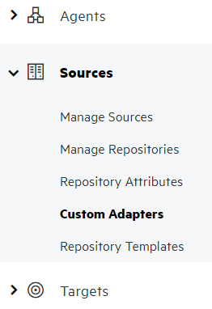
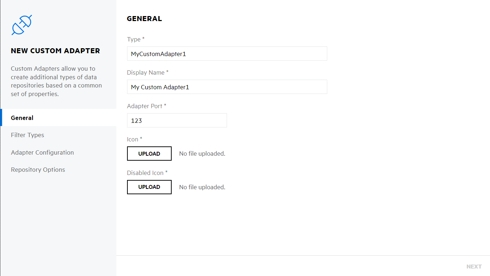
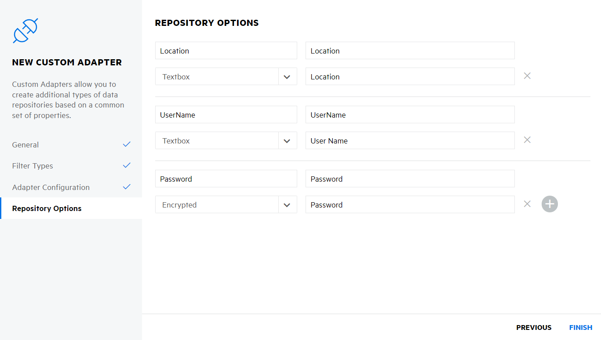
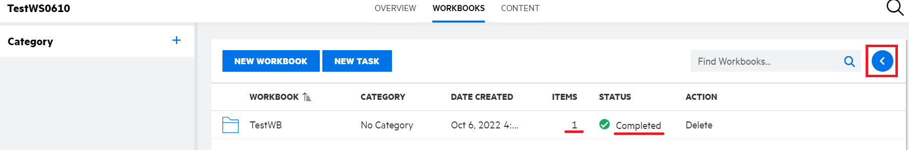

Building and Running Sample Projects
Console Application
Building and Running Console Application
- If you have not already downloaded them, the samples can be found here.
- Open the
ConsoleApplicationExample.slnsolution file. - Right-click the solution and click
Restore NuGet Packagesmenu item. - Right-click the solution and click
Build Solution - Click
Debug > Start Debuggingto start the app in Debug mode
This starts the console application sample.
To test the sample adapter, set up a Custom Adapter, a Source and a Repository. Follow these steps:
Go to Fusion > Connect screen
Navigate to Sources > Custom Adapters

Click New Custom Adapter 
Enter MyCustomAdapter1 into Type and complete the remaining General options as desired
Click Next until you get to Repository Options page
Add Location, UserName and Password options 
Click Finish
Create a new Source based on the new custom adapter
Create a new Repository for the new source. In the Location field, define a folder path to scan
This can be either a local path or a file share. Make sure that the current user has access to this folder.
Optionally, place a breakpoint in
MyAdapter,RetrieveFileListAsyncandRetrieveFilesDataAsyncmethods to see the execution.On the Manage Repositories, click the row for the new repository and then click the update icon that displays in the repository row. This triggers a scan of the folder and processing of files by Fusion.
If you added breakpoints in MyAdapter then the first breakpoint hit should be in RetrieveFileListAsync method.
The second - RetrieveFilesDataAsync.
Read through the detailed description in the links above.
After the operation finishes, check that all documents were loaded in Fusion.
More details about the Console Application sample can be found here.
Delete files from workspace
To test the delete files from custom adapter workspace, set up a Workspace and a Workbook. Follow these steps:
Go to Fusion > Connect screen
Navigate to Fusion > Manage > Workspaces

Click New Workspace
Enter any name into Name and uncheck Enforce Policy Review option and click on OK to finish setup.
Click on newly created Workspace and go to Content there you will see list of scanned documents.
Select file/s which you want to delete, and click on Manage icon, you will get list of options.
Click on Add selected to Workbook option, it will open window.
It will show list of existing workbook if present else click on NEW WORKBOOK option. In that enter any workbook name in Name field and click on CREATE.

Select newly created workbook from previous opened window and click on ADD button, window will get closed.
After few minuets you can see file count in Item column. and click on blue left arrow highlighted. 
It will open side bar in that click Activity and click on Delete icon.
If you added breakpoint in DeleteFilesAsync method of MyAdapter class then the breakpoint gets hit.
After the operation finishes, check that all documents from workbook and from local/network folder gets removed.
Worker Service
The Worker Service can be used as a Windows Service in production or a console application during development.
Steps for running the sample as a Consol App are the same as the Console Application sample.
This command line argument is configured in the provided sample project in OpenText.Fusion.AdapterSdk.Samples.WorkerServiceExample/Properties/launchSettings.json.
Steps to install the sample as Windows Service are provided here.
Next - Creating a New Adapter